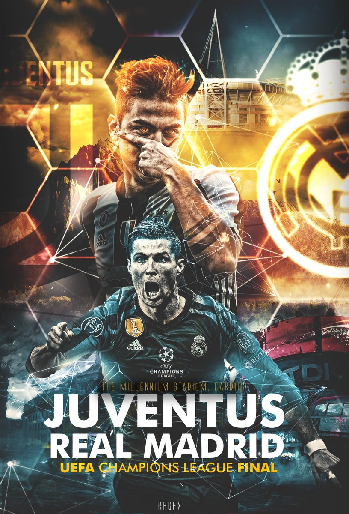
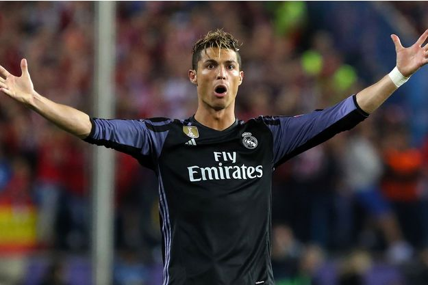

bienvenue sur mon site sur Cristiano Ronaldo
Website van YANNIK over Cristiano Ronaldo
Welkom op mijn site
Cristiano Ronaldo
Cristiano Ronaldo dos Santos Aveiro, couramment appelé Cristiano Ronaldo et surnommé CR7, né le 5 février 1985 à Funchal sur l'île de Madère, est un footballeur international portugais


Considéré comme l'un des meilleurs joueurs du monde, il remporte le Ballon d'or en 2008, 2013, 2014, 2016 et 2017
Auteur de plus de 620 buts en carrière, il est le meilleur buteur de l'histoire de la Ligue des champions, du Real Madrid, du derby madrilène, de la Coupe du monde des clubs et de la sélection portugaise, dont il est le capitaine depuis 2007
Premier joueur à avoir remporté le Soulier d'or européen à quatre reprises, il est également le co-meilleur buteur de l'histoire du championnat d'Europe des nations avec Michel Platini
Élevé dans le quartier de Santo Antonio sur l'île de Madère, il intègre le centre de formation du Sporting Clube de Portugal à l'âge de onze ans et signe son premier contrat professionnel en 2002
Recruté pour la somme de 15 millions d'euros par Manchester United durant l'été 2003, il révèle son talent lors de l'Euro 2004 à seulement 19 ans avec le Portugal
Il réalise une excellente saison 2007-2008 avec Manchester United en remportant la Barclays Premier League et la Ligue des champions
En 2009, il est l'objet du transfert le plus élevé de l'histoire du football, quand il quitte les Red Devils pour le Real Madrid contre une indemnité d'environ 94 millions d'euros (détrôné en 2013 par son nouveau coéquipier Gareth Bale)
Il remporte avec le club madrilènes de nombreux trophées comme le championnat espagnol en 2012 et 2017 et trois fois la Ligue des champions en 2014, 2016 et 2017
Il est le capitaine et un des acteurs décisifs de l'équipe du Portugal qui remporte son tout premier titre international en battant la France en finale de l'Euro 2016
Couronné Ballon d'or en 2008, 2013, 2014, 2016 et 2017 et deuxième en 2007, 2009, 2011, 2012 et 2015, Ronaldo a également remporté des titres de meilleur buteur mondial de l'année (IFFHS) (2013, 2014 et 2015), ainsi que de meilleur joueur (en 2012, 2013, 2014) et du meilleur buteur du championnat d’Espagne de football (Pichichi) à trois reprises (2011, 2014, 2015)
Il finit également meilleur joueur d'Europe en 2014, 2016 et 2017 et meilleur footballeur de l'année UEFA en 2008, ainsi qu'en 2016 et 2017 (The Best, Joueur de la FIFA)
Son influence ne s'arrête pas qu'au football : il est en 2016 et en 2017, selon le magazine Forbes, le sportif le mieux rémunéré au monde, notamment grâce aux contrats publicitaires
Il a également lancé sa propre marque de sous-vêtements, CR7, et a lancé, en collaboration avec la chaîne d'hôtels Pestana, sa propre chaîne d'hôtels
L'aéroport de Funchal, ville natale du joueur, porte son nom depuis le 24 mars 2017 : l'Aéroport Cristiano-Ronaldo8,9
Un film documentaire intitulé Ronaldo, consacré à la vie du joueur portugais, est sorti en salles le 9 novembre 2015